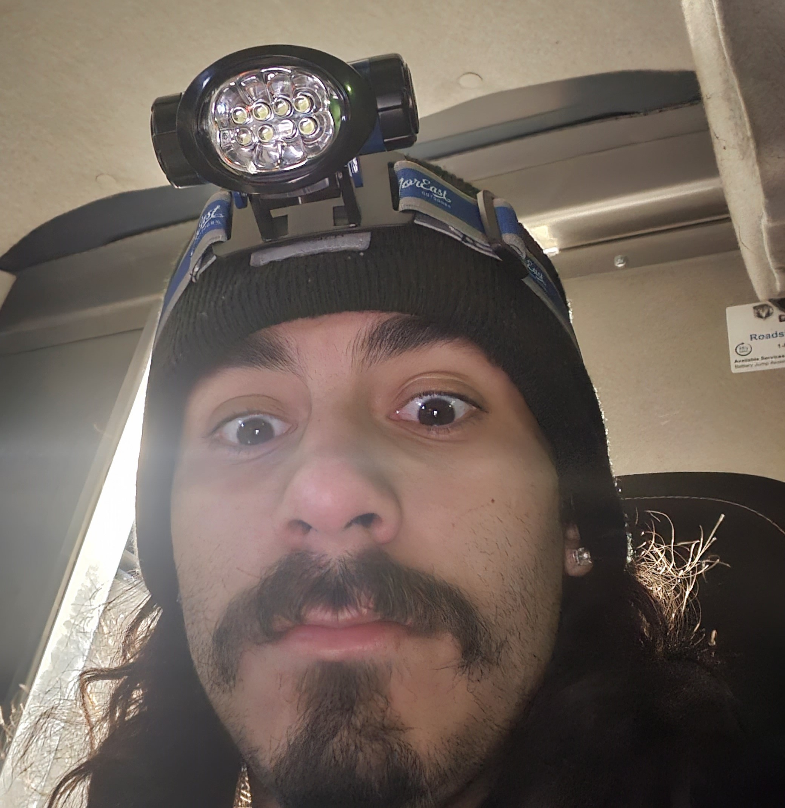

Bryan Avalos
Preferred Name: Bryan

About Me!
Email: bryanhavalos@lewisu.edu
Discord Username: bryan05255
Hello! My name is Bryan Avalos and I am a 5th year senior here at Lewis. I have two brothers and a sister who are all older than me.
These are my two majors that I am pursing: Computer Science and Forensic Criminal Investigation
I have always loved learning about technology my whole life and I think this is the major to learn more about it.
I hope to learn all about the way developing sofwatre is in the real world.
While thise course is required, I think that learning the material will help prepare me for what is to come!
These are some of my favorite things to do: vooking, videogames, technology, learning about cars
I went to Mexico in the summer of 2024!
I went for about a week and it was fun to learn mroe about my culture.